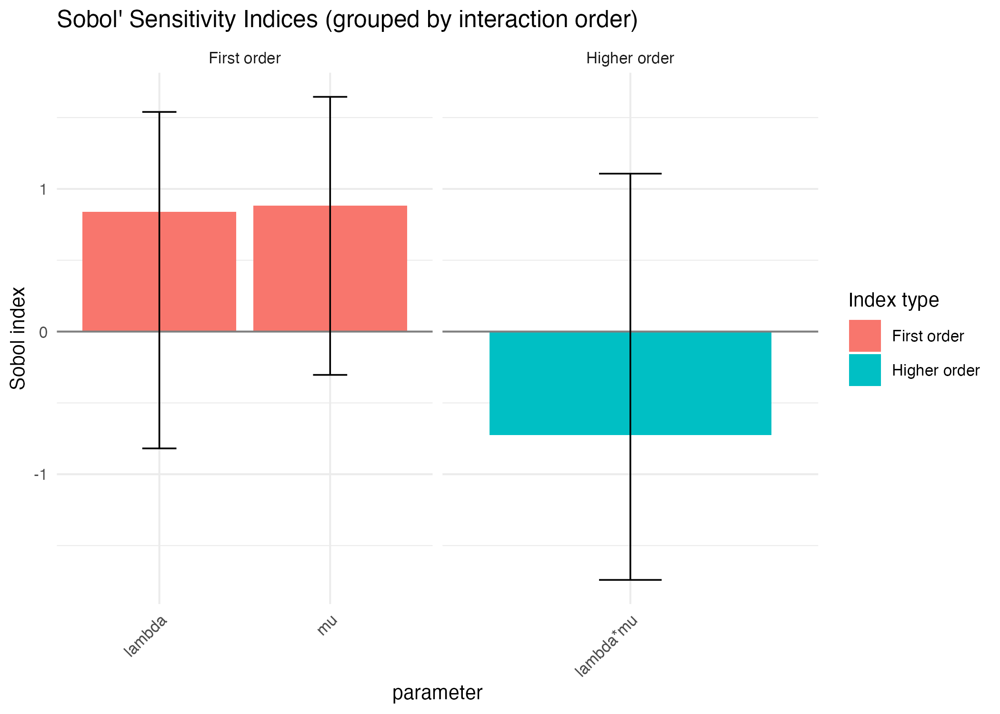
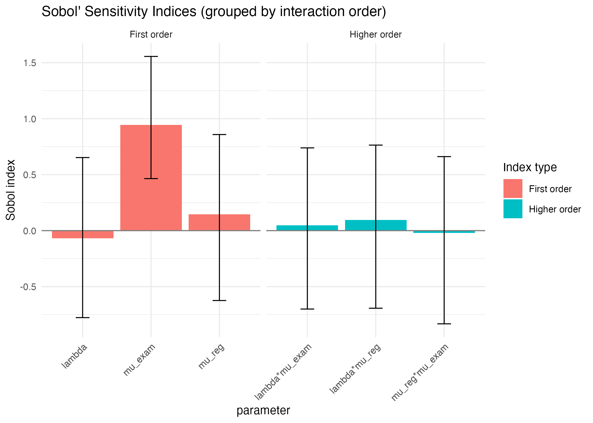

Sobol sensitivity analysis of an M/M/1 queue in simmer
Frédéric Bertrand
Cedric, Cnam, Parisfrederic.bertrand@lecnam.net
2025-11-26
Source:vignettes/simmer_MM1_Sobol_example.Rmd
simmer_MM1_Sobol_example.RmdModel description
We consider a simple M/M/1 queue simulated with the
simmer package.
Two input parameters are uncertain
-
lambdaarrival rate (interarrival times distributed as Exp(lambda))
-
muservice rate (service times distributed as Exp(mu))
We study the impact of these two parameters on the mean waiting time in the queue at stationarity using Sobol indices.
Simulation model
# M/M/1 simmer model for Sobol analysis using time in system as QoI
library(simmer)
# One replication: mean time in system (sojourn time)
simulate_mm1_once_ts <- function(lambda, mu,
horizon = 1000,
warmup = 200) {
traj <- trajectory("customer") %>%
seize("server") %>%
timeout(function() rexp(1, rate = mu)) %>%
release("server")
env <- simmer("MM1_queue") %>%
add_resource("server", capacity = 1, queue_size = Inf) %>%
add_generator(
name_prefix = "cust",
trajectory = traj,
distribution = function() rexp(1, rate = lambda)
)
env <- run(env, until = horizon)
arr <- get_mon_arrivals(env)
# Keep only post warmup
arr <- arr[arr$end_time > warmup, , drop = FALSE]
if (nrow(arr) == 0L) {
return(0)
}
# Time in system = end_time - start_time
ts <- arr$end_time - arr$start_time
m <- mean(ts, na.rm = TRUE)
if (!is.finite(m)) m <- 0
m
}
# Quick sanity check
simulate_mm1_once_ts(lambda = 1/5, mu = 1/4)
#> [1] 11.99866To reduce Monte Carlo noise, we define a quantity of interest (QoI)
equal to the mean waiting time over several independent replications for
the same parameter pair (lambda, mu).
# QoI: average mean time in system over replications
simulate_mm1_qoi_ts <- function(lambda, mu,
horizon = 1000,
warmup = 200,
nrep = 20L) {
nrep <- as.integer(nrep)
if (nrep < 1L) stop("'nrep' must be at least 1")
vals <- replicate(
nrep,
simulate_mm1_once_ts(lambda = lambda, mu = mu,
horizon = horizon, warmup = warmup)
)
mean(vals)
}
simulate_mm1_qoi_ts(lambda = 1/5, mu = 1/4)
#> [1] 20.65865Sobol model wrapper
The Sobol routine expects a model that takes a design matrix
X and returns a numeric vector of length
nrow(X). Here X has two columns
-
lambda
mu
# Model wrapper for sensitivity::sobol
mm1_sobol4r_model_ts <- function(X,
horizon = 1000,
warmup = 200,
nrep = 20L) {
X <- as.data.frame(X)
apply(X, 1L, function(par) {
lambda <- par[1]
mu <- par[2]
val <- simulate_mm1_qoi_ts(lambda = lambda, mu = mu,
horizon = horizon,
warmup = warmup,
nrep = nrep)
if (!is.finite(val)) val <- 0
val
})
}Sobol design for lambda and mu
We assume independent uniform priors
-
lambdain[0.10, 0.30]
-
muin[0.20, 0.60]
n <- 200
X1 <- data.frame(
lambda = runif(n, min = 0.10, max = 0.30),
mu = runif(n, min = 0.20, max = 0.60)
)
X2 <- data.frame(
lambda = runif(n, min = 0.10, max = 0.30),
mu = runif(n, min = 0.20, max = 0.60)
)
# Helper to build a design region with non trivial queues but stable system
# choose lambda < mu, with rho close to 1
example_design_mm1_ts <- function(n = 100) {
lambda <- runif(n, min = 0.18, max = 0.22)
mu <- runif(n, min = 0.23, max = 0.27)
data.frame(lambda = lambda, mu = mu)
}Sobol indices
library(simmer)
library(sensitivity)
set.seed(4669)
n <- 150
X1 <- example_design_mm1_ts(n)
X2 <- example_design_mm1_ts(n)
sob_mm1 <- sobol(
model = NULL,
X1 = X1,
X2 = X2,
order = 2,
nboot = 50
)
Y <- mm1_sobol4r_model_ts(
sob_mm1$X,
horizon = 1000,
warmup = 200,
nrep = 20
)
if (any(is.na(Y))) stop("Model returned NA values")
if (any(is.infinite(Y))) stop("Model returned infinite values")
summary(Y) # should now show positive, variable values
#> Min. 1st Qu. Median Mean 3rd Qu. Max.
#> 9.678 15.576 18.664 20.224 23.415 47.195
sob_mm1 <- tell(sob_mm1, Y)
print(sob_mm1)
#>
#> Call:
#> sobol(model = NULL, X1 = X1, X2 = X2, order = 2, nboot = 50)
#>
#> Model runs: 600
#>
#> Sobol indices
#> original bias std. error min. c.i. max. c.i.
#> lambda 0.8395726 0.17202798 0.5227109 -0.818910 1.539591
#> mu 0.8819571 -0.02622773 0.3794092 -0.303649 1.645314
#> lambda*mu -0.7266537 -0.15674237 0.6468889 -1.740781 1.107084If ggplot2 is installed, we can visualise the indices
with the autoplot method provided by the package.
Sobol4R::autoplot(sob_mm1)
Summary
We have shown how to
- build a simple M/M/1 queue in
simmer
- define a scalar summary statistic (mean waiting time) as a QoI
- wrap the simulator into a function compatible with
sensitivity::sobol
- compute Sobol indices for the two key parameters
lambdaandmu
The same pattern can be reused for more complex discrete event
simulations implemented with simmer.
n <- 200
X1 <- data.frame(
lambda = runif(n, 0.05, 0.20),
mu_reg = runif(n, 0.30, 0.80),
mu_exam = runif(n, 0.20, 0.60)
)
X2 <- data.frame(
lambda = runif(n, 0.05, 0.20),
mu_reg = runif(n, 0.30, 0.80),
mu_exam = runif(n, 0.20, 0.60)
)
sob_clinic <- sobol(model = NULL,
X1 = X1,
X2 = X2,
order = 2,
nboot = 50)
Yc <- sobol4r_clinic_model(sob_clinic$X,
cap_reg = 2,
cap_exam = 3,
horizon = 2000,
warmup_prob = 0.2,
nrep = 10)
sob_clinic <- tell(sob_clinic, Yc)
print(sob_clinic)
#>
#> Call:
#> sobol(model = NULL, X1 = X1, X2 = X2, order = 2, nboot = 50)
#>
#> Model runs: 1400
#>
#> Sobol indices
#> original bias std. error min. c.i. max. c.i.
#> lambda -0.06917129 -0.01456138 0.4425323 -0.7768860 0.6526977
#> mu_reg 0.14549298 0.02817958 0.3568214 -0.6241805 0.8582114
#> mu_exam 0.94350070 -0.03795032 0.2581954 0.4647090 1.5558301
#> lambda*mu_reg 0.09415805 0.01032690 0.4447800 -0.6930579 0.7638910
#> lambda*mu_exam 0.04811807 0.01390153 0.4365342 -0.7003076 0.7390800
#> mu_reg*mu_exam -0.02079743 0.01079563 0.4448869 -0.8323448 0.6611365
Sobol4R::autoplot(sob_clinic)